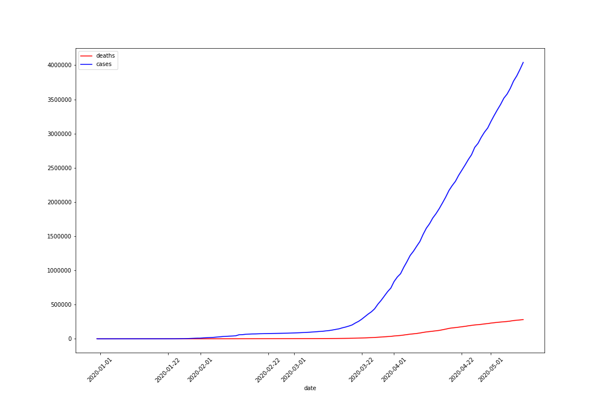
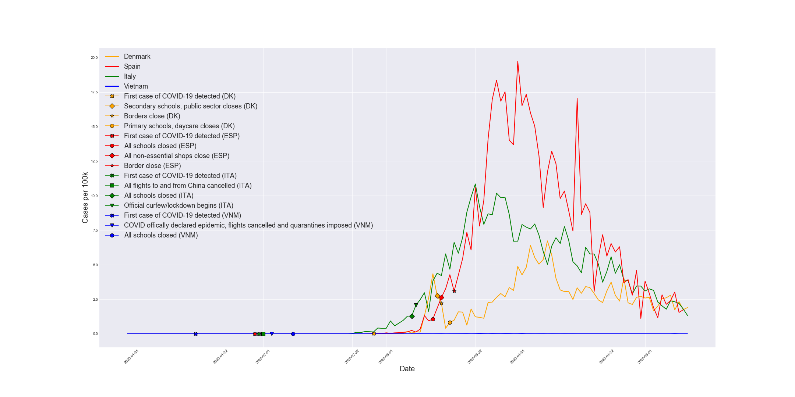
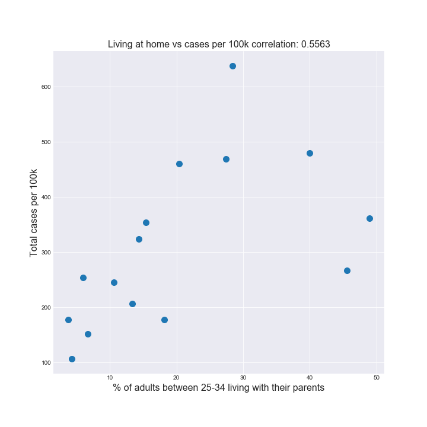
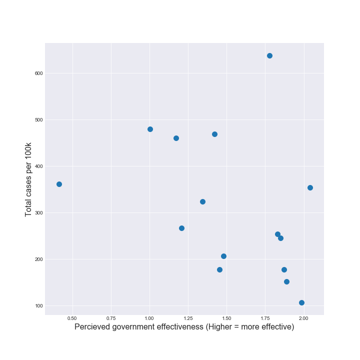

Covid-19 has been the headline for 2020. No matter where you are in the world you are, the Covid-19 pandemic has most certainly affected your daily life in some way, although some countries are more severely impacted than others. In this data analysis we explore some possible factors that may very well have influenced the spread of the virus either speeding it up or slowing it down. The data analysis is focused on western Europe, as this region has a lot of available data, as well as having some considerable differences in severity of the covid-19 impact across the region.
Let's look at Europe and see how they are doing
Some countries have done better than others containing the spread, here we show the growth of new cases for Denmark, Spain, Italy and Vietnam who have done an admirable job containing the spread.
So what causes some countries to have more cases than others, here we explore some different variables that might hav an impact
Here we compare the countries in terms of deaths and cases to see who is doing well and who is doing less well.
Again exploring some different variables for the countries
By exploring the data we have found 2 interesting stats that have a correlation with cases, first it seems that countries with more adults living with their parents have more cases, and second the better view a country has of its governments effectiveness the less cases that country has.
 